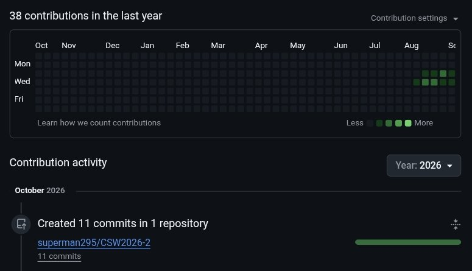

landing-page-derik
Repositório com esta landing page, feita com HTML, CSS e um pouco de JavaScript e publicada no GitHub Pages.
É aqui que guardo e publico as páginas que construo.
Perfil público com os projetos da faculdade e as páginas web que estou construindo.
Abrir meu perfil no GitHubRepositório com esta landing page, feita com HTML, CSS e um pouco de JavaScript e publicada no GitHub Pages.
38 contribuições no último ano, incluindo 11 commits em outubro de 2026 no repositório da disciplina, o CSW2026-2.

Captura de tela do meu perfil em outubro de 2026.